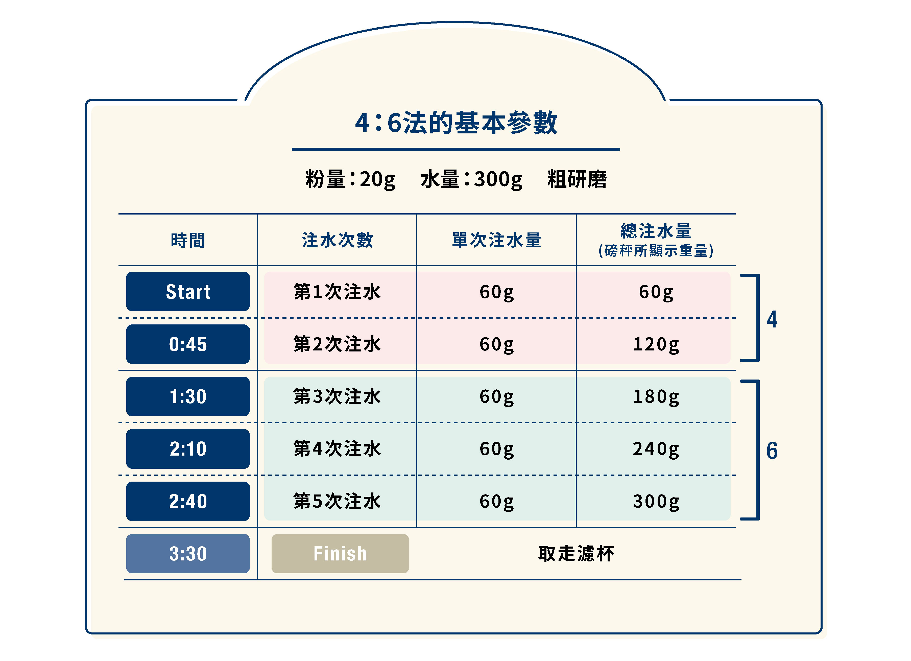

標準沖煮流程
- 15g~20g咖啡粉與水：建議比例 1:15
- 加熱水至 88~94°C
- 研磨至中細顆粒
- 潤濕（預浸）粉床：30秒悶蒸
- 繞圈注水至目標水量
- 總萃取時間控制在 2:00~3:00

圖文步驟教學
步驟 1：預熱與潤濕
先倒少量熱水潤濕濾紙，並預熱器具，然後倒入第一段等量熱水進行預浸。

手沖咖啡基本四六法教學影片
常見錯誤與排解
- 咖啡過酸：可能萃取不足或水溫過低。
- 咖啡過苦：可能萃取過度或粉太細或萃取時間拉太長。
- 沒味道：粉水比例不對或使用舊豆。
- 水柱不穩：注水速度與角度需穩定。